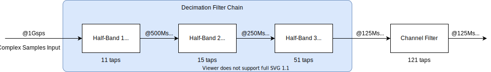
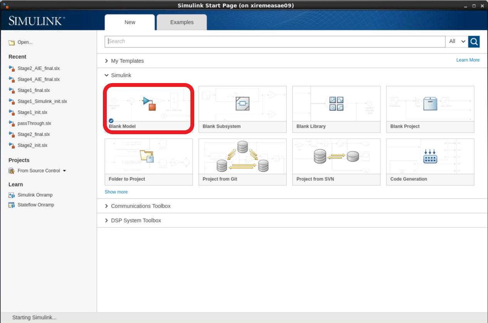
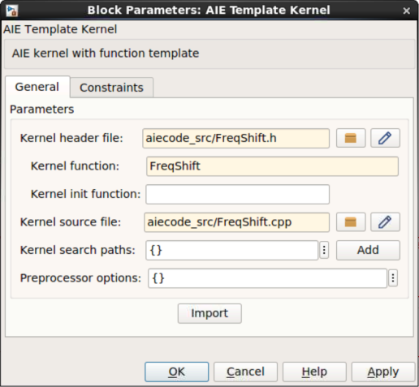

Designing with the AI Engine DSPLib and Model Composer |
Introduction¶
The purpose of this tutorial is to provide hands-on experience for designing AI Engine applications using Model Composer. This tool is a set of blocksets for Simulink that makes it easy to develop applications for Xilinx devices, integrating RTL/HLS blocks for the Programmable Logic, as well as AI Engine blocks for the AI Engine array. Model Composer can be used to create complex systems targeting the PL (RTL and HLS blocksets) and the AI Engine array (AIE blockset) at the same time. The complete system can be simulated in Simulink, and the code generated (RTL for the PL and C++ graph for the AI Engine array).
Before You Begin¶
Install the tools:
Get and install MATLAB and Simulink 2019b or 2020a.
Do not forget to also install the DSP System Toolbox (necessary for this tutorial).
Get and install Xilinx Vitis 2020.2.
Overview¶
The goal of this tutorial is to implement the Decimation Filter Chain depicted below:

Open MATLAB by typing
xmc_sysgen. The path to the various blocksets of Model Composer are automatically added.In order to initialize the tutorial environment type
setupLabin the MATLAB command window.
This function includes the directory LabUtils in the search path and runs the filter coefficients initialization. The output in the MATLAB command window is:
>> setupLab
HB1
Center Tap: 16384
Phase 1 Norm: 16384
Max Phase 1: 9647
HB2
Center Tap: 16384
Phase 1 Norm: 16384
Max Phase 1: 9935
HB3
Center Tap: 16384
Phase 1 Norm: 16384
Max Phase 1: 10373
CF
Channel Filter Norm: 32768
Max Coef: 28004
>>
In the workspace sub-window you can see that a number of variables that are defined:
hb1,hb2,hb3,cfi: Coefficients of the filters which are used in the Simulink model.hb1_aie,hb2_aie,hb3_aie,cfi_aie: Coefficients vectors which are used in the AI Engine design:For half-band filters this vector contains only the left-hand side non-null taps including the centre tap.
For symmetric filters this vector contains only the left-hand side taps, including the center tap if the filter length is odd.
Shift1, Shift2, Shift3, ShiftCF: The number of bits bits by which the result has to be shifted before the result is sent to the ouput port.

Stage 1: Create and Simulate the Design¶
On the MATLAB GUI, select the Home Tab and click Simulink.

Select Blank Model to create a new canvas on which to design the Decimation Chain.

Perform the next two steps to enhance the User Experience. This allows you to have an instant access to the initialization file and to automatically call it when opening the design or when you update it.
Right-click in the canvas and select Model Properties:
Click the Callbacks tab.
Click PreLoadFcn and type
CreateFilter;in the edit window on the right.Click InitFcn and type
CreateFilter;in the edit window on the right.Click Apply.

Click on the canvas and type
subsys. Select the first Subsystem displayed in the list (Subsystem, Simulink/Ports & Subsystem).
Double-click the new block and remove all blocks inside (CTRL-A and Del).
Go back to the top level by clicking on the Up-arrow.

Right-click the Subsystem and select Properties.
Click the Callbacks tab.
Select OpenFcn in the Callback function list.
Type
open('CreateFilter.m');in the edit window on the right.Click Apply and OK.
Now when you double-lick this bock you will open the initialization matlab function (CreateFilter.m) in the MATLAB editor. Save the model CTRL+S and assign the name XMC_DSPLib.
Click the Library Browser icon.
Near the end of the list of the Library Browser, you will find the Xilinx Toolbox. This contains three sub-libraries:
AI Engine
HDL
HLS
Click the AI Engine section. This reveals see four subsections:
DSP
Interfaces
Tools
User-Defined functions
Click the DSP sub-section and place the AIE FIR Filter block in the canvas as shown in the following figure.
Double-click the AIE FIR Filter block to open the GUI. Populate the GUI with the following parameters and click OK:
Filter type: Halfband Decimator
Filter length: length(hb1)
Filter coefficients: hb1_aie
Filter coefficients data type: int16
Input/output data type: cint16
Input Window size (Number of samples): 2048
Input sampling rate (MSPS): 1000
**Scale output down by 2^: Shift1
Rounding mode: Floor
Now create a data source to feed this filter.
Create the following two blocks by clicking the canvas and typing the beginning of the name of the block. Then enter the given parameters:
| Name to Type | Block Name to Select | Parameters |
|---|---|---|
| random | Random Source | Source Type: Uniform Minimum: -30000 Maximum: 30000 Sample time: 1 Samples per frame: 2048 Complexity: complex |
| cast | Cast | Output data type: int16 |
Cascade the three blocks: Random Source, Cast, AIE FIR Filter.
The file
ReferenceChain.slxcontains the decimation chain using Simulink blocks. Open the file ReferenceChain.slx. Copy the block HB1 over to your design.Copy the small set of blocks (To Fixed Size, Subtract, Scope) to create the following design:

Ensure that the parameter Output Size of the block To Fixed Size is set to 1024.
Set the Stop Time to
5000and run the design. The FIR filter is compiled and the design is run. The scope should show a completely null difference.To gain more information about the signals traveling through the wires, update the following display parameters:
Right-click the canvas and select Other Displays –> Signals and Ports –> Signal Dimensions.
Right-click the canvas and select Other Displays –> Signals and Ports –> Port Data Types.
Right-click the canvas and select Sample Time Display –> all.
After updating the design with CTRL-D, the display should look as follows:
Notice that before the implementing the Decimation Filter the vector length was 2048, but after implementation this was reduced to 1024.
Update the design with the other three filters using the following parameters:
| Parameter | HB1 | HB2 | HB3 | Channel Filter |
|---|---|---|---|---|
| Filter Type | HalfBand Decimator | HalfBand Decimator | HalfBand Decimator | Single Rate Filter |
| Symmetric Filter | N/A | N/A | N/A | Check |
| Filter Length | length(hb1) | length(hb2) | length(hb3) | length(cfi) |
| Filter Coefficients | hb1_aie | hb2_aie | hb3_aie | cfi_aie |
| Filter Coefficients Data Type | int16 | int16 | int16 | int16 |
| Input Output data type | cint16 | cint16 | cint16 | cint16 |
| Input window size (Number of samples) | 2048 | 1024 | 512 | 256 |
| Input sampling rate (MSPS) | 1000 | 500 | 250 | 125 |
| Number of Cascade stages | N/A | N/A | N/A | 1 |
| Scale output down by 2^ | Shift1 | Shift2 | Shift3 | ShiftCF |
| Rounding mode floor | floor | floor | floor |
Update the Output Size parameter of the To Fixed Size block to
256. The design should look like as follows:
Run the design. The added filters are compiled and the design is run through the 5000 samples. The difference between the output should still be 0.
Stage 2: Further Analysis of the Design¶
When creating a DSP design, one of the most important parameters to consider is the spectrum. In Simulink the spectrum can be easily displayed using a spectrum scope.
Right-click the canvas and type
spectrum. Select Spectrum Analyzer. Set the following parameters (click the left-most button of the icon bar to display the GUI).Overlap: 50%
Average: 16
Set the Stop Time of the simulation to inf.
Connect the spectrum scope at the output of the last filter (the Channel Filter):
Run the simulation. The spectrum scope should display similar to the following:

Now add a block coming from a standard templated C++ kernel which source is in the directory aiecode_src. This function will be a frequency shift operation that will be placed after the downsampling chain.
Select the block from the User-defined Functions section of the AI Engine Library and place it in the canvas:
Double-click the block, a GUI will display. Populate it with the following data:
Kernel header file:
aiecode_src / FreqShift.hKernel function:
FreqShiftKernel source file:
aiecode_src / FreqShift.cpp

Click Import. A new GUI displays. FRAME_LENGTH is the template parameter. Its value is
256because at this stage this is the size of the data frames. The input and output ports have also the same size:256samples. Click OK.
Place this new block between the ‘AIE FIR Channel’ and ‘To Fixed Size’ blocks. Grab the ‘FreqShift’ block from the Reference Chain Simulink design and place it after the ChannelFilter Simulink block. Your design should now look as follows:
Click Run. The new filter will get compiled and a new spectrum will be displayed:

Switch the Stop Time back to
5000and verify that the difference is still 0.
Developing an AI Engine graph in Model Composer is relatively straightforward. What you have learned here is that you can easily place a spectrum scope within the design at the output of a design, but actually it could be placed anywhere in between two blocks without modifying anything in the kernels and the graph. Furthermore, Simulink has a lot of specific blocksets that can be used to generate test vectors, create a reference model, and compare the signals at any point in the design.
If you want to save some data in a workspace variable for some more complex analysis. This can be done using the Variable Size Signal to Workspace block within the Xilinx Toolbox –> AI Engine –> Tools blockset:
All the simulations that occur in Simulink are the so-called ‘Emulation-SW’. These types of simulation are bit-exact, but they do not provide any information about timing.
Stage 3: Generate the Code and Perform Emulation-AI Engine¶
In this stage you will generate the graph code of this design and perform bit-true and cycle true simulations with the AI Engine Simulator.
Select the four AIE FIR Filters and the Frequency shifting block and type CTRL+G to group them in a subsystem. Assign a new name: FIRchain.
Click the canvas and type
model co. Select the block Model Composer Hub and set the following parameters:Subsystem name:
FIRchainCheck Create testbench
Check Run cycle-accurate SystemC simulator
Check Launch Vitis Analyzer
Click Apply and Generate and Run.
The simulink design is run to generate the testbench, then the graph code is generated and compiled. The source code can be viewed in ./code/src_aie/FIRchain.h:
#ifndef __XMC_FIRCHAIN_H__
#define __XMC_FIRCHAIN_H__
#include <adf.h>
#include "./AIE_FIR_Filter_ddde/AIE_FIR_Filter_ddde.h"
#include "./AIE_FIR_Filter2_8ddc/AIE_FIR_Filter2_8ddc.h"
#include "./AIE_FIR_Filter3_4d1d/AIE_FIR_Filter3_4d1d.h"
#include "./AIE_FIR_Channel_4f5d/AIE_FIR_Channel_4f5d.h"
#include "aiecode_src/FreqShift.h"
class FIRchain : public adf::graph {
private:
AIE_FIR_Filter_ddde AIE_FIR_Filter;
AIE_FIR_Filter2_8ddc AIE_FIR_Filter2;
AIE_FIR_Filter3_4d1d AIE_FIR_Filter3;
AIE_FIR_Channel_4f5d AIE_FIR_Channel;
adf::kernel AIE_Template_Kernel;
public:
adf::input_port In1;
adf::output_port Out1;
FIRchain() {
// create kernel AIE_Template_Kernel
AIE_Template_Kernel = adf::kernel::create(FreqShift<256>);
adf::source(AIE_Template_Kernel) = "aiecode_src/FreqShift.cpp";
adf::runtime<ratio>(AIE_Template_Kernel) = 0.9;
// create nets to specify connections
adf::connect< > net0 (In1, AIE_FIR_Filter.in);
adf::connect< > net1 (AIE_FIR_Filter.out, AIE_FIR_Filter2.in);
adf::connect< > net2 (AIE_FIR_Filter2.out, AIE_FIR_Filter3.in);
adf::connect< > net3 (AIE_FIR_Filter3.out, AIE_FIR_Channel.in);
adf::connect< adf::window<1024> > net4 (AIE_FIR_Channel.out, AIE_Template_Kernel.in[0]);
adf::connect< adf::window<1024> > net5 (AIE_Template_Kernel.out[0], Out1);
}
};
#endif // __XMC_FIRCHAIN_H__
Finally, the bit-exact simulation (Emulation-AIE) is performed and the result compared to the Simulink simulation:
Vitis Analyzer is then launched. From here you can see the Graph View, the Array View, the Timeline, and the Profile information.
Conclusion¶
Model Composer is a very efficient way to create graphs either using your own kernels or using the DSPLib FIR Filter (other blocks will be available in subsequent releases).
This tool shows its incredible flexibility when it comes to display spectrum or save data at any stage of the graph. All the source and sink blocks can be used anywhere, allowing you to efficiently debug your design in all corner cases.
© Copyright 2021 Xilinx, Inc.
Licensed under the Apache License, Version 2.0 (the “License”); you may not use this file except in compliance with the License. You may obtain a copy of the License at
http://www.apache.org/licenses/LICENSE-2.0
Unless required by applicable law or agreed to in writing, software distributed under the License is distributed on an “AS IS” BASIS, WITHOUT WARRANTIES OR CONDITIONS OF ANY KIND, either express or implied. See the License for the specific language governing permissions and limitations under the License.
XD058 | © Copyright 2021 Xilinx, Inc.